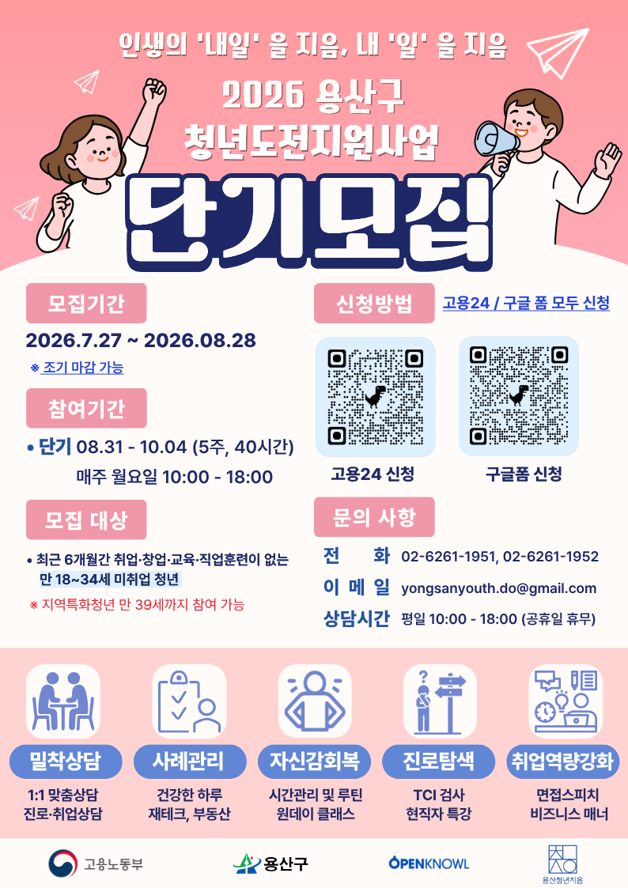

용산구, 청년도전지원사업 단기 참여자 모집…8월 28일까지
만 19~34세 구직 청년, 5주 40시간 맞춤 프로그램 지원

[시사포커스 / 김재록 기자] 서울 용산구(구청장 김경대)가 새로운 도약을 준비하는 청년들의 일상 회복과 사회 진출을 돕기 위해 '2026년 청년도전지원사업' 단기 참여자 모집에 나선다고 4일 밝혔다. 이번 프로그램은 다양한 이유로 구직활동에 어려움을 겪거나 새로운 출발을 준비하는 청년들에게 맞춤형 지원을 제공해 원활한 노동시장 진입과 취업을 돕기 위해 마련됐다. 모집 기간은 오는 8월 28일까지이며, 선착순 마감으로 조기 마감될 수 있다.
신청 대상은 최근 6개월간 취업·창업·교육·직업훈련 참여 이력이 없는 만 19세부터 34세까지의 청년이다. 자립준비청년, 청소년복지시설 입·퇴소 청년, 북한이탈청년 등 지원이 필요한 청년도 참여할 수 있으며, 용산구민인 경우에는 만 39세까지 신청할 수 있다. 단기 프로그램은 8월 31일부터 10월 4일까지 5주간 총 40시간 운영되며, 주요 내용은 ▲1:1 맞춤형 상담 ▲사례관리 ▲자신감 회복 프로그램 ▲진로탐색 ▲취업역량 강화 과정 등으로 구성된다. 김경대 용산구청장은 "현재 운영 중인 중·장기 프로그램에 이어 이번 단기 참여자 모집을 통해 더 많은 청년이 실질적인 도움을 받을 수 있을 것으로 기대한다"라며 "청년도전지원사업이 구직에 지친 청년들이 활력을 되찾고 자신만의 진로를 설계하는 계기가 되길 바란다"고 말했다.
행사는 용산청년지음(서빙고로 17, 용산센트럴해링턴파크 공공시설동 3층)에서 진행되며, 신청은 홍보 포스터 내 QR코드를 스캔하거나 고용24 누리집을 통해 온라인으로 할 수 있다. 자세한 사항은 용산청년지음 청년도전지원팀(02-6261-1951)으로 문의하면 된다. 용산구는 이번 단기 프로그램 운영을 바탕으로 향후 청년 지원 체계를 더욱 확대해 나갈 방침이다.